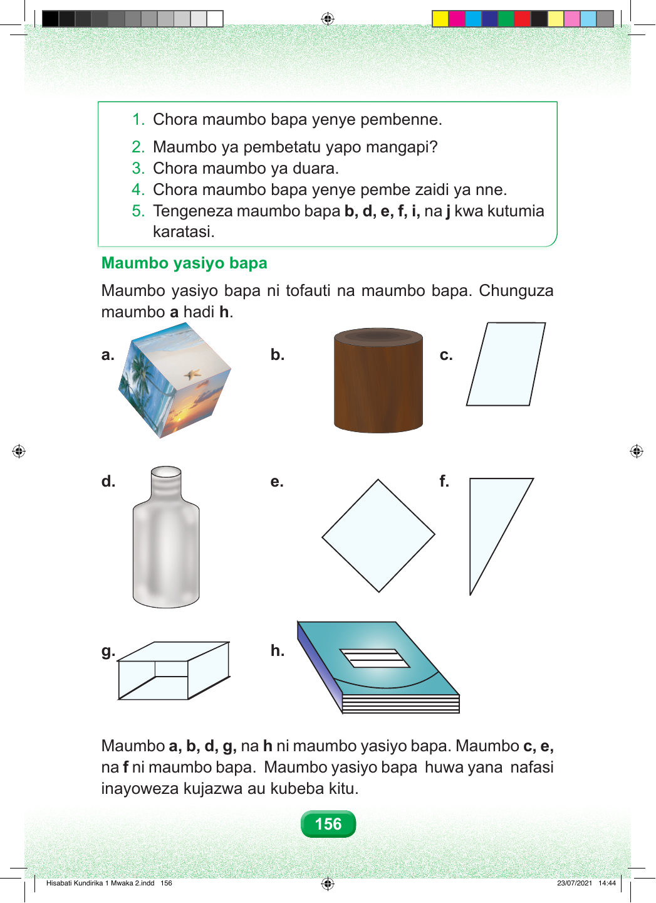

1. Chora maumbo bapa yenye pembenne. 2. Maumbo ya pembetatu yapo mangapi? 3. Chora maumbo ya duara. 4. Chora maumbo bapa yenye pembe zaidi ya nne. 5. Tengeneza maumbo bapa b, d, e, f, i, na j kwa kutumia karatasi. Maumbo yasiyo bapa Maumbo yasiyo bapa ni tofauti na maumbo bapa. Chunguza maumbo a hadi h. a. b. c. d. e. f. g. h. Maumbo a, b, d, g, na h ni maumbo yasiyo bapa. Maumbo c, e, na f ni maumbo bapa. Maumbo yasiyo bapa huwa yana nafasi inayoweza kujazwa au kubeba kitu. 156 Hisabati Kundirika 1 Mwaka 2.indd 156 23/07/2021 14:44